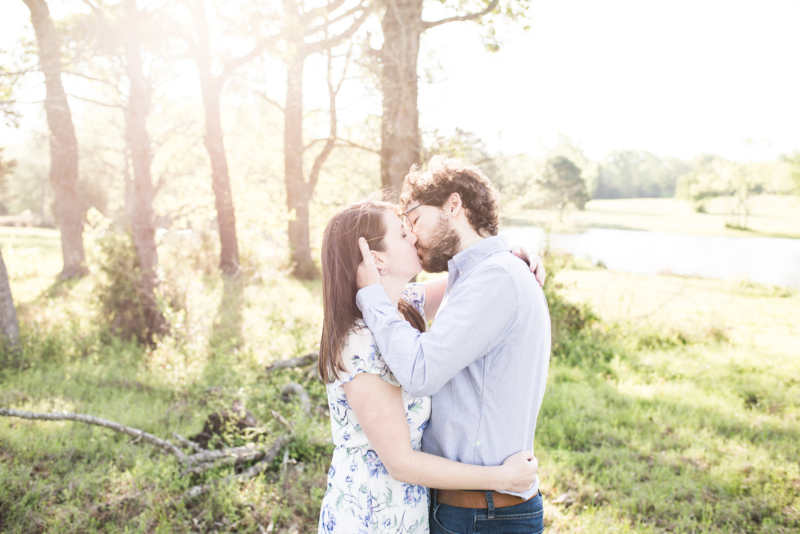

Carly and Tristan

About Us
Carly and Tristan met in Dallas in the summer of 2013. It was Tristan’s first summer out of college and he had just accepted a job in Southlake, Texas, a mere 1,600 miles from his hometown in New Jersey. Carly, a Texas native, was working in Dallas and decided to give the dating app Tinder a try based on the recommendation of her friend, Tommy. She had just visited Tommy in NYC and when she saw Tristan’s profile on the app- a Columbia Graduate and NYC transplant- she was intrigued! Why would someone move from The Big Apple to the Big D?

It turns out Tristan was living in Keller which was north of Fort Worth. So on their first date, he had to drive over an hour to meet her. Earlier that day, Tristan had accidentally sent a text to Carly saying, “I forgot the duct tape! I have to go back to the store.” That text frightened Carly… and rightly so. Why would her blind date need duct tape? He quickly replied that it was a message sent to the wrong person…. That didn’t make her feel any better. Despite the chance of ending up in the trunk of Tristan’s car, she had a “good feeling” and wanted to keep the date.
Carly knew her way around Dallas more, so Tristan drove to her place and the two got in her car to go to Deep Ellum, an arts and entertainment district, perfect for a Saturday night. They had dinner at The Angry Dog and then walked to Trees for some live music. Howie Day was performing that night and Carly had always loved his hit song, “Collide.” The two had a great time listening to the singer-songwriter, sipping cocktails, and getting to know each other. That was the first of many dates, and pretty soon the couple was inseparable.
Five years and 1,500 miles later, Carly and Tristan are living in Englewood, New Jersey. They cannot wait to host all of their friends and family at their wedding in Brooklyn, New York Labor Day Weekend 2018.
The Wedding

WhenWedding Ceremony 6:00pm - 8:00pm Reception and Dinner 8:00pm - 12:00am |
WhereMaison May, 246 Dekalb Avenue Brooklyn, NY 11205 |